เที่ยวบ้านม่วงคำ
สวนทูนอิน Tune In garden
" Tune in, Turn on, Drop out "
139 Moo3 T. Pongyang Amphoe Mae Rim, Pong Yaeng, Thailand, Chiang Mai Tel.053 879 251
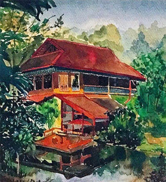
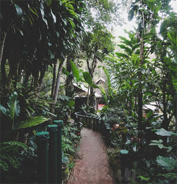
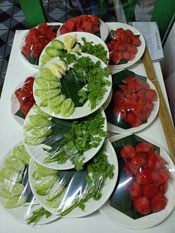
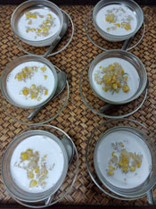
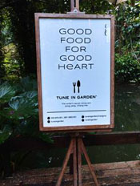
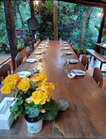
139 Moo3 T. Pongyang Amphoe Mae Rim, Pong Yaeng, Thailand, Chiang Mai Tel.053 879 251
Maroochi Mountain Club
272 Moo 3 Pongyang, Mae Rim, Thailand, Chiang Mai
自己紹介 Sit high on 900 m above sea level in Muangkam Village Pyongyang Chiangmai is a an adventure club.
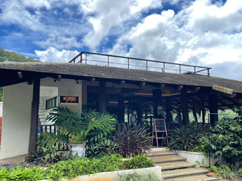
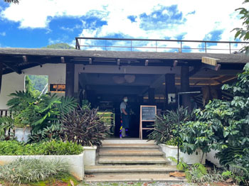
自己紹介 Sit high on 900 m above sea level in Muangkam Village Pyongyang Chiangmai is a an adventure club.
บ้านสวนสุขผสม
ศูนย์การเรียนรู้ ผักไฮโดรโปนิก บ้านสวนสุขผสม
บ้านเลขที่86 ตำบล โป่งแยง อำเภอแม่ริม เชียงใหม่ 50180 โทรศัพท์: 086 196 6191
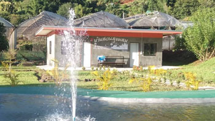
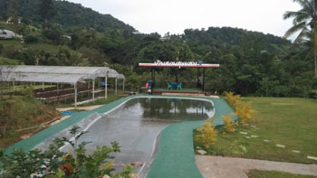
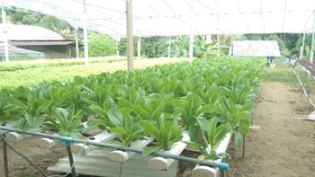
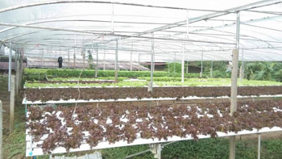
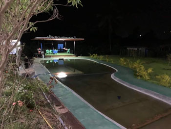
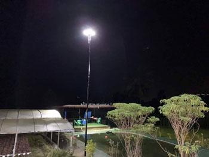
บ้านเลขที่86 ตำบล โป่งแยง อำเภอแม่ริม เชียงใหม่ 50180 โทรศัพท์: 086 196 6191
โป่งแยงฟาร์ม Pong Yang Farm


340 บ้านหลวง หมู่3 ต.โป่งแยง อ.แม่ริม Tel 095 691 0707, แม่ริม, เชียงใหม่, ไทย, 50180
ที่พักนี้มีบริการอินเทอร์เน็ต Wi-Fi ฟรีในทุกห้องพัก ช่วยให้การเดินทางสะดวกยิ่งขึ้นไปอีก ที่พักตั้งอยู่ในย่านแม่ริมของเชียงใหม่
ผู้เข้าพักจึงได้อยู่ใกล้สถานที่ท่องเที่ยวน่าสนใจและร้านอาหารอร่อยๆ ที่พัก 3.5 ดาวคุณภาพสูงแห่งนี้มี บริการนวด, สระว่ายน้ำกลางแจ้ง และ ห้องอาหาร คอยอำนวยความสะดวกแก่ผู้เข้าพัก
ที่พักนี้มีบริการอินเทอร์เน็ต Wi-Fi ฟรีในทุกห้องพัก ช่วยให้การเดินทางสะดวกยิ่งขึ้นไปอีก ที่พักตั้งอยู่ในย่านแม่ริมของเชียงใหม่
ผู้เข้าพักจึงได้อยู่ใกล้สถานที่ท่องเที่ยวน่าสนใจและร้านอาหารอร่อยๆ ที่พัก 3.5 ดาวคุณภาพสูงแห่งนี้มี บริการนวด, สระว่ายน้ำกลางแจ้ง และ ห้องอาหาร คอยอำนวยความสะดวกแก่ผู้เข้าพัก
Mori Natural Farm โมริ เนเชอรัลฟาร์ม


ฟาร์มเกษตรออแกนิค แบบธรรมชาติ พร้อมฟาร์มสเตย์ในหุบเขา ติดต่อบ้านพัก 0817878595, Line ID:
08178785
88/9 moo3 T.Pongyaeng Mae Rim, Chiang Mai, Thailand 50180
88/9 moo3 T.Pongyaeng Mae Rim, Chiang Mai, Thailand 50180
บ้านไร่ภูภูมิ เชียงใหม่ (Ban Rai Phu Phum Chiang Mai)
บ้านพักพร้อมอาหารเช้า
88/8 หมู่ 3,mae Rim, Pong Yaeng, Chiang Mai Thailand, 50180
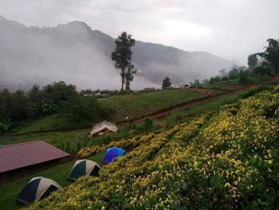
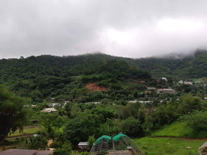
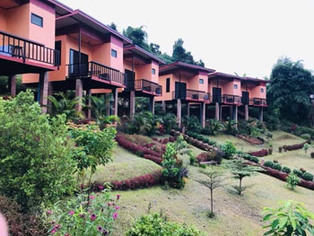
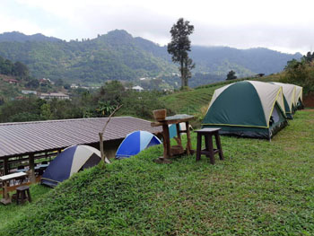
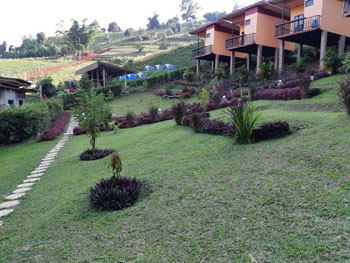
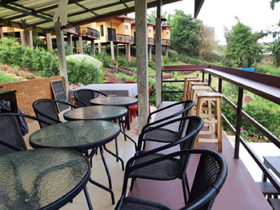
88/8 หมู่ 3,mae Rim, Pong Yaeng, Chiang Mai Thailand, 50180